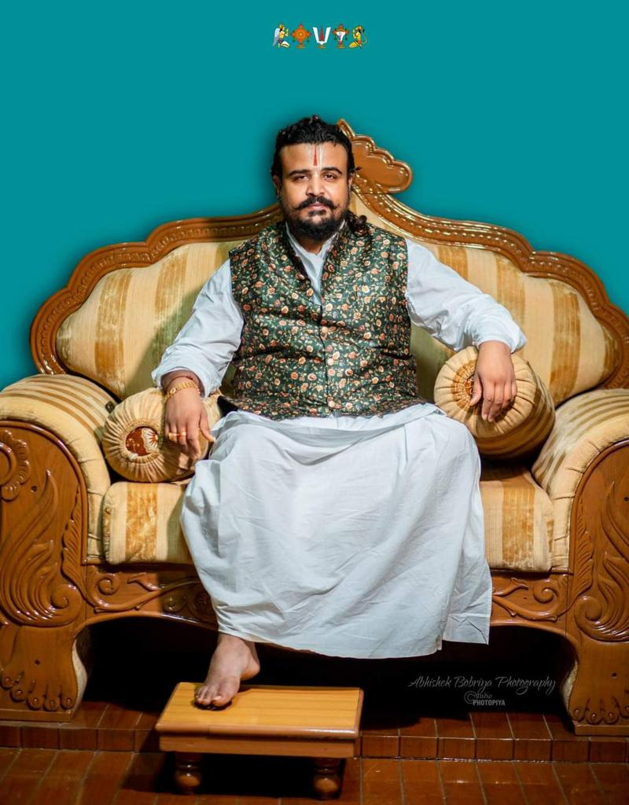
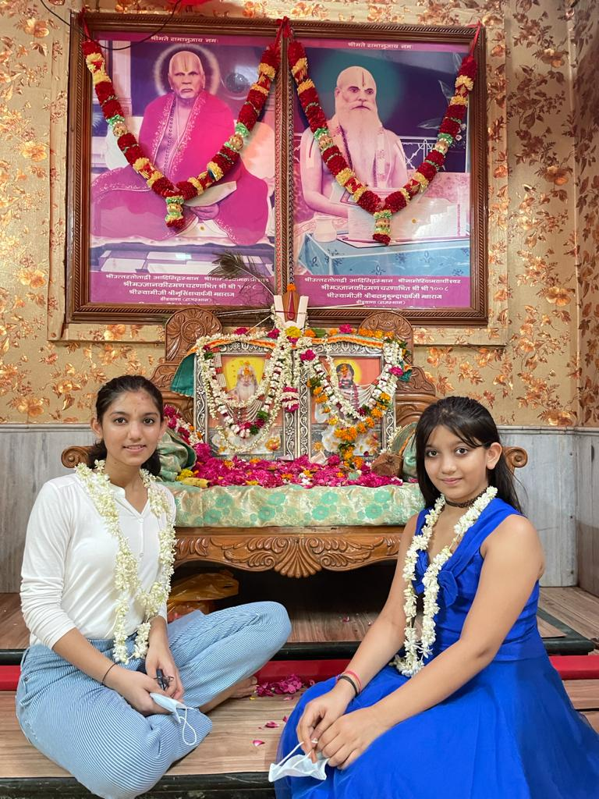
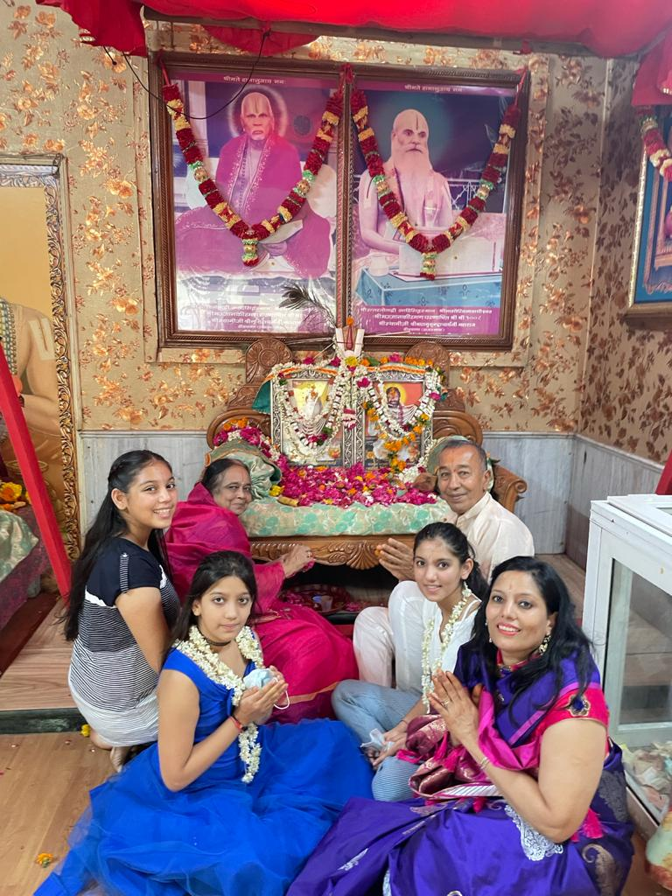

श्री श्रियै नमः
श्रीमते रामानुजाय नमः


नागोरिया पीठाधीश्वर श्री श्री 1008 अनन्त श्री विभूषित श्रीमदजगदगुरु श्रीविष्णुप्रपन्नाचार्यजी महाराज
वात्सल्यादिमहार्घरत्नविलसच्छ्रीछ्रीनिवासाम्बुधे |र्दिव्यं प्रोच्छलितं तरङ्गमखिलैर्भव्यैर्गुणैः संयुतम् ||
श्रीवानाचलयोगिवर्यचरणाम्भोजोल्लसन्मानसम् | श्रीवैकुण्ठपतेः पदाब्जनिरतं श्रीविष्णुप्रपन्नं श्रये ||
🌹 स्वामीजी के श्रीचरणों में साष्टांग दंडवत प्रणाम 🌹
आभानगरी डीडवाना के आदि सिद्धस्थान नागोरिया मठ की स्थापना आज से 530 वर्ष पूर्व विक्रम संवत 1547 तदानुसार 1490 ई. में हुई थी। वर्तमान में नागौरिया मठ की गद्दी के 16वें स्वामीजी के रूप में नागोरिया पीठाधीश्वर श्री श्री 1008 अनन्त श्री विभूषित श्रीमदजगदगुरु श्रीविष्णुप्रपन्नाचार्य जी महाराज विराजमान है |
गुरु भक्ति के लिए हर पल ही शुभ होता है, परन्तु गुरु पूर्णिमा का दिन स्वामीजी को समर्पित एक अत्यंत शुभ अवसर है।
श्री संप्रदाय (श्री श्री रामानुज स्वामीजी परंपरा) से सम्बद्ध गुरु सन्निधि में मठ के पूर्वाचार्यो का गुरु परंपरा के अनुसार गुरु पूर्णिमा पूजन और गुरु चरणों का शिष्यों द्वारा गुरु परंपरा और स्तोत्र पाठ करते हुए गुरु चरण पूजन करते हे । गुरु पूर्णिमा महोत्सव मनाने के पीछे अलग अलग मान्यताएं और परंपराएं है कहा जाता है कि गुरु ही गोविंद से एक शिष्य को मिलाता है,मंदिर में भी प्राचीन समय से यही परंपरा रही है जहां केवल एक ही दिन नही बल्कि हमेशा नित्य गुरु परंपरा का पाठ नियमित रूप से किया जाता है ।नागोरिया मठ प्रधान अर्चक श्री सुदर्शनाचार्य जी ने बताया कि इस दिन का शास्त्रों में विशेष महत्व बताया गया है जो कोई इस दिन गुरु चरण सेवा करता है वह सहज ही मुक्ति को प्राप्त करके श्रीलक्ष्मीवेंकटेश लोक को जाता है ।
स्वामीजी अनन्त श्री विभूषित श्रीमदजगदगुरु श्रीविष्णुप्रपन्नाचार्य जिनके दर्शन मात्र से हमारा मन प्रसन्न होता है, अपने आप धैर्य और शांति आ जाती हैं, वे परम मेरे गुरु हैं। जिनकी रग-रग में ब्रह्म का तेज व्याप्त है, जिनका मुख मण्डल तेजोमय हो चुका है, उनके मुख मण्डल से ऐसी आभा निकलती है कि जो भी उनके समीप जाता है वह उस तेज से प्रभावित हुए बिना नहीं रह सकता।
मेरे जीवन की सच्ची संपत्ति गुरु हैं। वे इस मानव जीवन की सांसे हे , हमारे प्राण हैं। वे जनमन के नायक, राष्ट्र के उन्नायक हैं। स्वामीजी ही देश के अनमोल रत्न हैं। स्वामीजी की भूमिका हमारे संस्कार निर्माण में अक्षुण्ण और अतुलनीय है।
माता-पिता ने जन्म दिया पर, गुरु ने जीने की कला सिखाई है |
ज्ञान चरित्र और संस्कार की, हमने शिक्षा पाई है ||
श्रेष्ठ गुरु संसार में, विश्वामित्र – वशिष्ठ !
गुरु – कृपा से रामजी, बने जगत के इष्ट !!
🌹 गुरुमंत्र को कर आतमसात, हो जाओ भबसागर से पार! 🌹
हे गुरुदेव – स्वामीजी !
गुरुपूर्णिमा के पावन पर्व पर आपके श्रीचरणों में अनंत कोटि प्रणाम ||
!आपके साथ हमारी श्रद्धा की डोर कभी टूटने न पाये ||
 